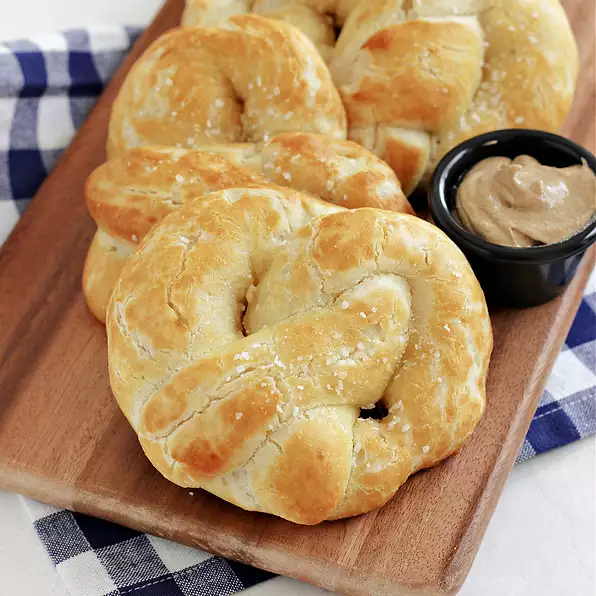

Two-Ingredient Dough Soft Pretzels

Description
This is a simple pretzel recipe. The dough itself only uses two ingredients!
Ingredients
- 2 tablespoons baking soda
- 3 tablespoons butter, melted
- 1 teaspoon coarse salt, or as needed
- Two Ingredient Dough:
- 1 cup self-rising flour, plus more for kneading
- 1 cup plain Greek yogurt
Directions:
- Bring 6 cups of water to a low boil in a large pot. Add baking soda.
- Preheat the oven to 350 degrees F (175 degrees C). Grease a baking sheet.
- Mix 1 cup flour and Greek yogurt together in a medium bowl until a shaggy dough forms. Transfer to a surface dusted with more self-rising flour, and knead for 8 to 10 minutes. Continue adding flour as needed if the dough is too sticky.
- Cut the dough into 4 equal pieces. Roll each segment into a long, thin rope, 22 to 24 inches in length. Twist the rope into a pretzel shape by taking the two ends, twisting them around each other, then securing both ends side-by-side onto the center portion of the rope.
- One by one, carefully drop each pretzel into the water and boil until the pretzel floats to the top, 2 to 3 minutes. Drain on paper towels or a cooling rack.
- Transfer to the prepared baking sheet.
- Bake in the preheated oven for 20 minutes. Remove from the oven and increase the oven's temperature to 425 degrees F (220 degrees C). Brush the pretzels with some of the melted butter; continue to bake until golden brown, 4 to 5 minutes more. Brush with remaining butter and top with coarse salt.
Back to Main Page